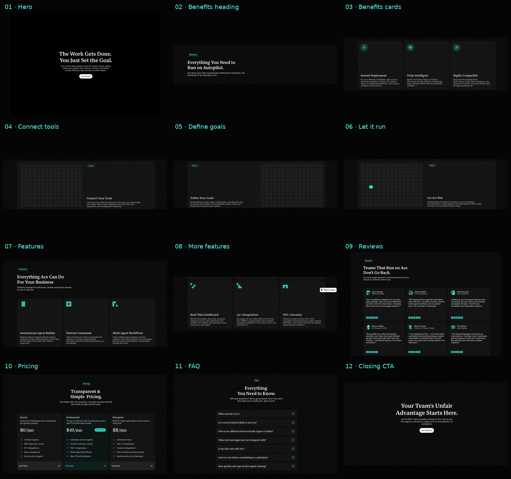

A clear starting point
Icon at the top. Copy at the bottom. The space between them is part of the design.
An independent specimen of the Ace Framer visual system. Measured desktop values, original components, and a working recreation in one reference package.
Icon at the top. Copy at the bottom. The space between them is part of the design.
1136px content width. 20px panel corners. 24px padding. 8px gaps.
Example plan presentation.
A serif question, a cyan circle-plus, compact sans-serif answer text, and a native keyboard-accessible interaction.
Keep the page near-black. Use cyan for signals. Let headings feel human through the serif, and keep supporting text compact.
Preserve the generous spacing and low-anchored card copy. Avoid filling the quiet spaces with extra illustrations or interface fragments.
Three columns on desktop, two on tablet, one on phone. Alternating step panels become a consistent vertical reading order on small screens.
Measured values explain the reference. Original copy and CSS tile motion demonstrate the recreation. They do not establish source business claims or exact motion fidelity.
